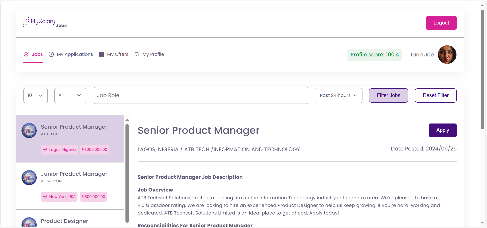
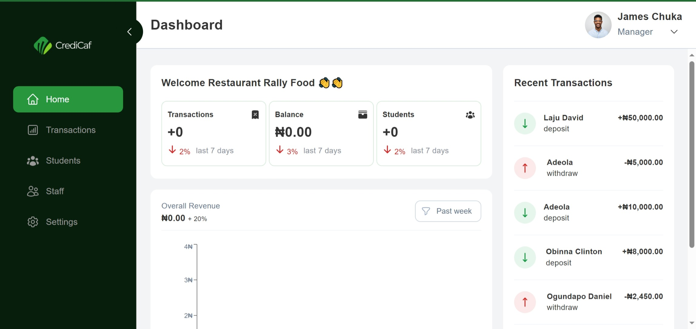
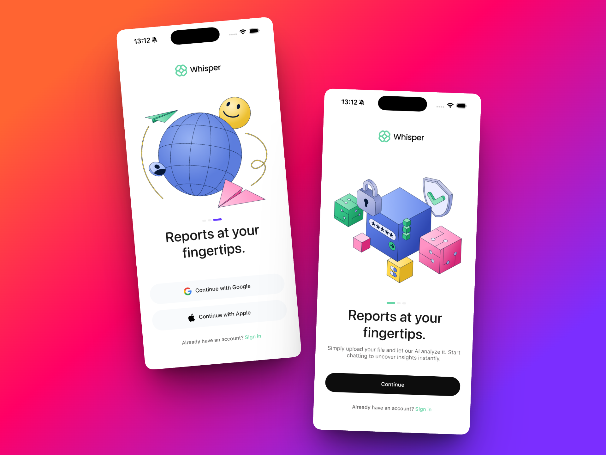
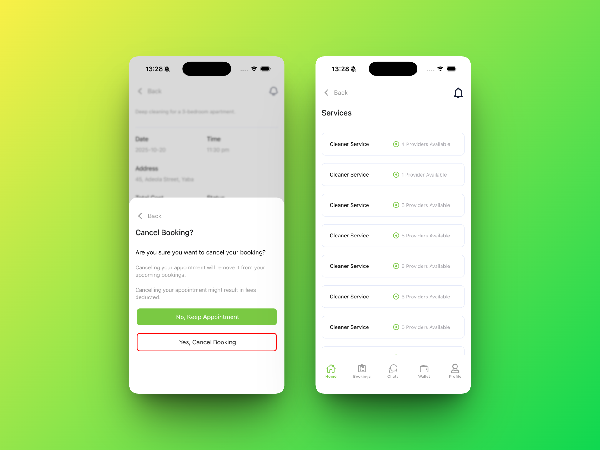

Hi, my name is
Rashedat Jinadu | Frontend Developer
I help early-stage startups build websites and mobile applications that convert users, deliver performance, and position them at the top of their niche.
📞 Send me an email if you’d like to discuss how I can help you achieve your website development and mobile application development goals.
about me
Startup products are delicate. Without a developer who understands both technology and business, even strong ideas can fail due to poor execution.
I’m a frontend developer and product-minded partner who helps startups and growing businesses turn ideas into scalable, high-performing products.
When a product is built right, it feels like the exact solution users have been searching for, and that’s where real conversions happen.
I have 4+ years of experience helping founders move from “just an idea” to products that attract users, convert effectively, and scale with confidence.
If you have a product idea you want to grow, let’s talk. I’m happy to learn about your goals, timeline, budget, and what success looks like for your business
Here are the technologies I work with
- javaScript (ES6+)
- React and Redux
- Next.js
- React Native
- Expo
- Tailwind CSS
- HTML
- CSS
- Typescript
- Github and Version Control
Projects

Project
My-Xalary
Improved the credibility of an existing website by refining the interface, fixing broken functionalities, and optimizing the app for speed.
The figma conversion required close attention to detail and fast execution, as issues affected daily usage. By identifying problem areas, correcting UI inconsistencies, and removing performance bottlenecks, the app became smoother, stable, professional, more responsive, and more reliable for users.
- React
- SCSS
- Express
- MongoDB

Project
CrediCaf
Eliminated manual paperwork entirely by building a centralized change-management system that digitized approvals, tracking, and record-keeping across the business.
The system delivers a fast, secure, and intuitive user experience, supports role-based access, and enables teams to quickly find, review, and manage changes with real-time data, resulting in smoother operations and business transparency.
- React
- Supabase
- Context API
- Styled Components
- React Query

Project
Whisper
Improved user retention by 47% by redesigning and refining the onboarding flow for a data-management startup. The goal was to create a calm, welcoming experience that guided users without overwhelming them.
I focused on reducing friction, simplifying decisions, and developing flows that respected users’ time and attention.
The result was a stronger first impression, fewer early drop-offs, and an onboarding experience that helped users understand the product’s value quickly.
- React Native
- Expo
- Nativewind
- XCode
- Git

Project
TooDoo
Built a production-ready MVP for a startup, enabling users to book on-demand services such as cleaning and laundry from their mobile devices.
The app was designed to validate the business idea quickly, so the focus was on speed, clarity, and reliability. I delivered a polished mobile experience that works seamlessly on both iOS and Android, adapts smoothly across screen sizes, and stays true to the original Figma designs.
the startup was able to launch with confidence, demonstrate the product to users and stakeholders, and begin validating demand without technical friction.
- React Native
- Expo
- Typescript
- Stylesheet
- IoS and Android
Reccomendations
other things i've built
RandomIdea
Created an Idea sharing application where several users can submit thier random ideas and also see the Ideas that has been submitted by other people. Stored ideas in MongoDB and fetched them using APIs. Over 10 ideas has been submitted b various users on RandomIdea.
- JavaScript
- Webpack
- MongoDB
- Express and Nodejs
Godzinu
Created a landing page for a token generation company. Used framer motion animations and swiper Js Api for smooth animation. I used widgets to display GODZinu tweets and medium articles on the website.
- React + vite
- Tailwind
Skripper
Collaborated with six other developers to recreate Skripper website. Strenghtned my ability to collaborate, communicate effectively and be a team worker.
- HTML
- CSS
- JavaScript
GetLinked
I participated in an hackathon to convert a figma file into a pixel perfect website. The resgistation and contact page are linked to a backend database to store a user's details and message.
- Tailwind
- API Integration
- JavaScript
- Git